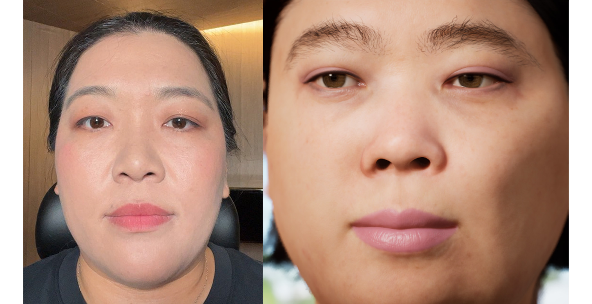
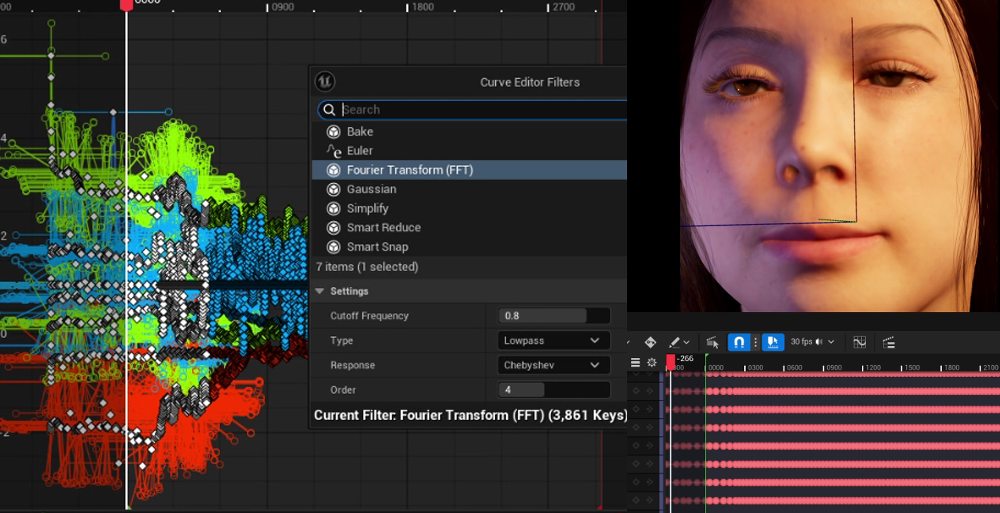
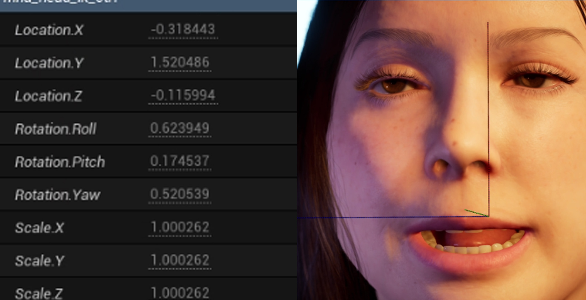

01 Organize input identities
Use traceable participant references and identity targets; create reviewable characters rather than disconnected files.
Ten distinct people. One reviewable character-production workflow. Multiple animation and integration failure modes.

Producing one convincing character does not automatically scale to ten. Inconsistent input quality, face/body alignment, animation timing, materials, hair and staging can become compounding errors across the entire group.
I helped standardize the MetaHuman identity and animation review process for ten people, addressed head-body conflicts, missing performance sections, timing and overlap artifacts, and prepared consistent lookdev, staging and final output for a two-channel Unreal installation.
Use traceable participant references and identity targets; create reviewable characters rather than disconnected files.
Check head/body assembly, consistent reference camera, facial proportions, skin, eyes, teeth and groom presentation.
Identify missing ranges, face/body conflicts, synchronization drift and visible artifacts across individual takes.
Review multiple characters together for animation overlap, continuity, composition and cross-character consistency.
Coordinate timing, lighting variants, alpha and two-channel outputs for final presentation.




Repeated checks and naming must be stable or downstream reviews become ambiguous across characters.
A shared technical baseline should not remove each person's distinct facial characteristics.
A valid solo take can still fail when combined with the group sequence.
This project establishes scale, procedural consistency and in-engine animation correction. Its documented output is a two-channel Unreal installation, not a shipped Unreal PC/console game or measured runtime animation-budget study.
See also: original, expanded project archive ↗